Film Services
We do locations, permits, risk assessments, scouting, and location moodboards, breakdown, scheduling, budgeting, local fixers, and location managers.
All-round technical crew, creative departments, photographers, professional drivers, experienced production crew, casting talents, and extras, mediation and advice, accommodation, logistics, ground transport, vehicle rentals, and equipment.
Administration, handling VAT, payroll service & legal procedures for hiring minors. We are committed to applying sustainability in all aspects of our work.
 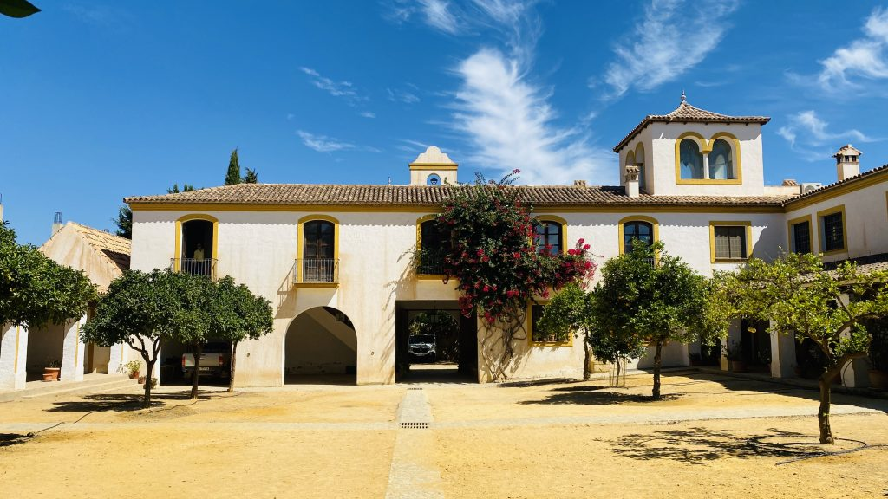
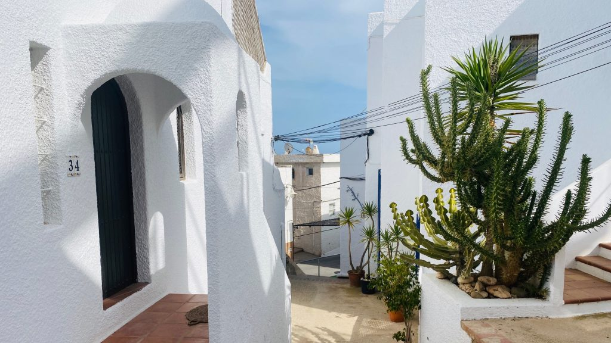
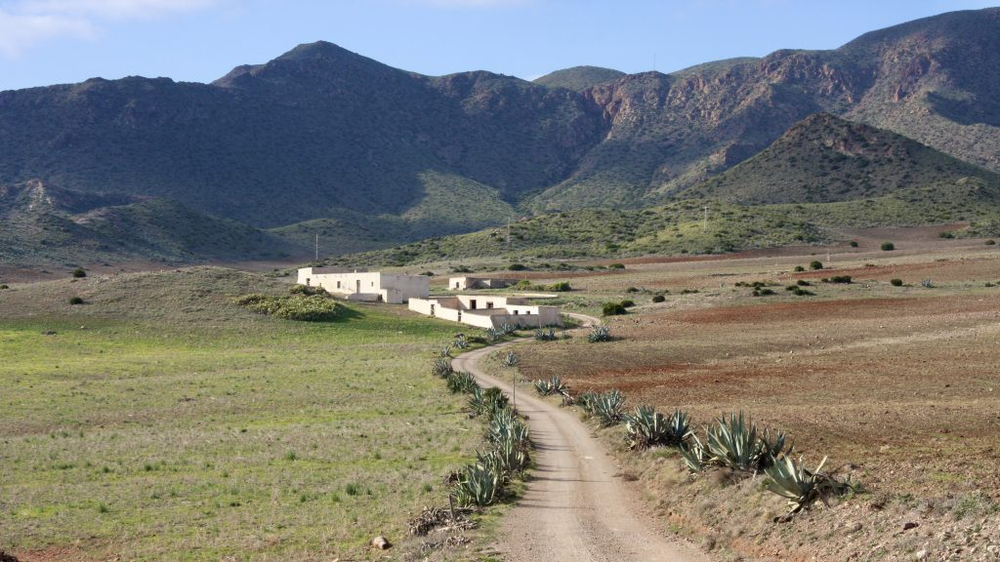
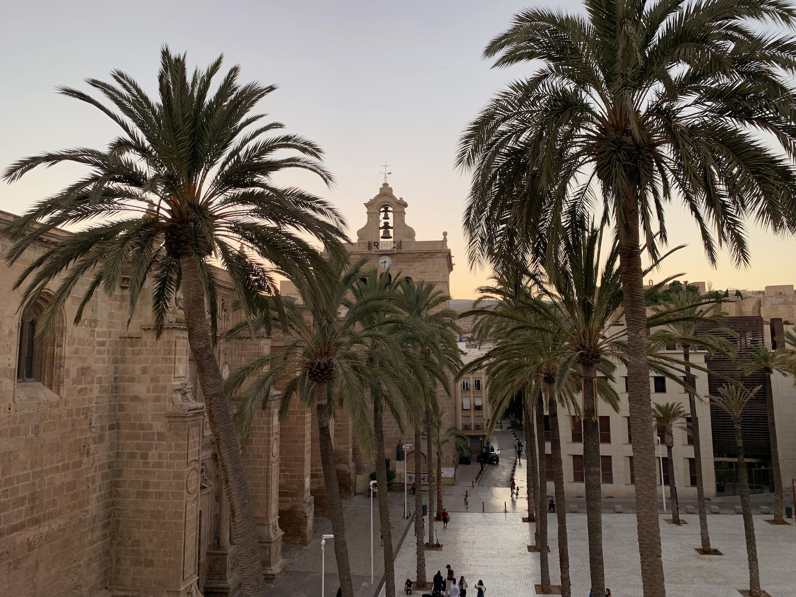
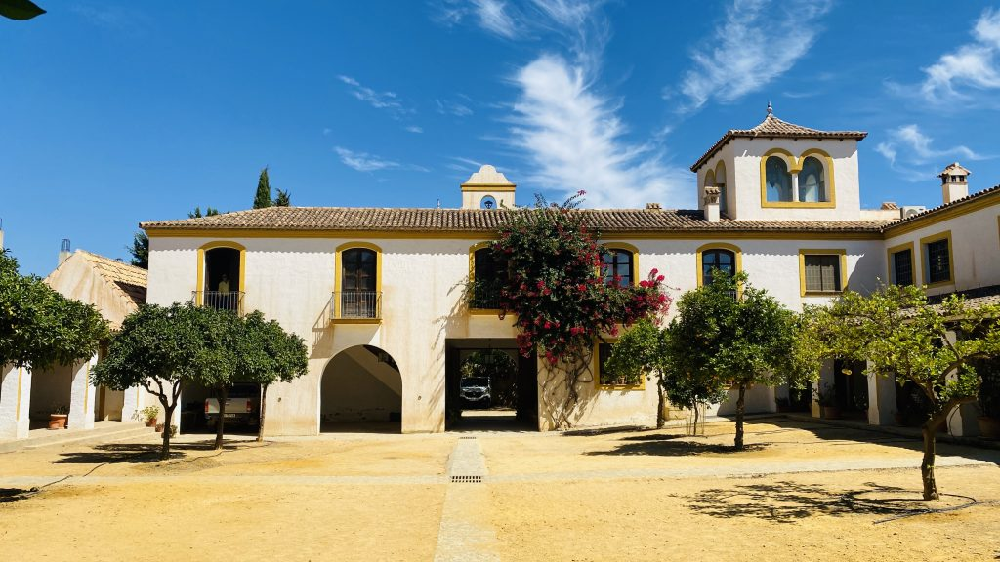
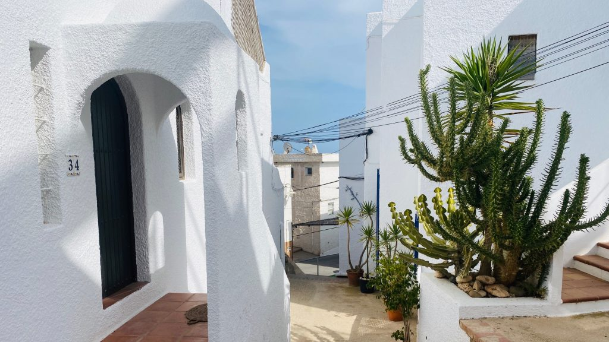
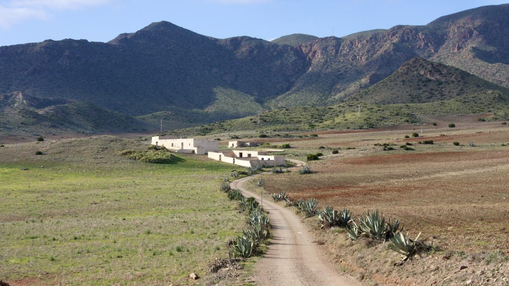
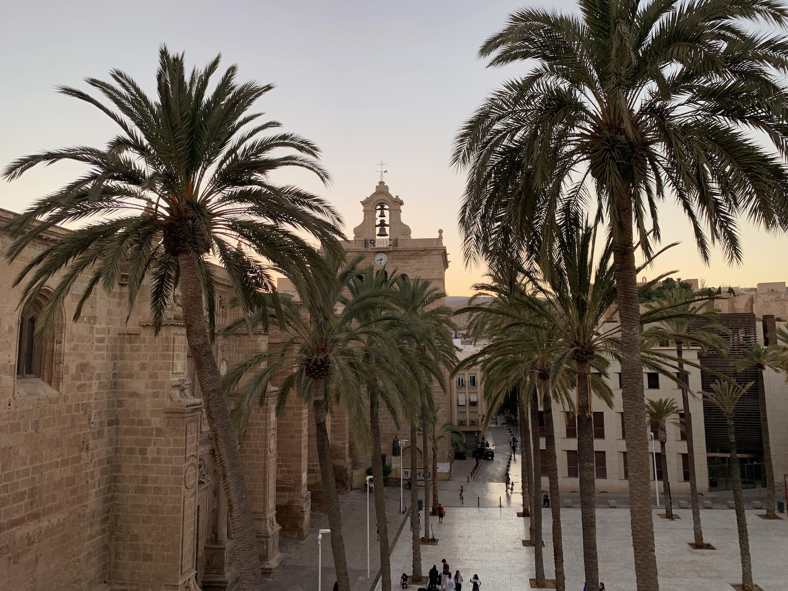


 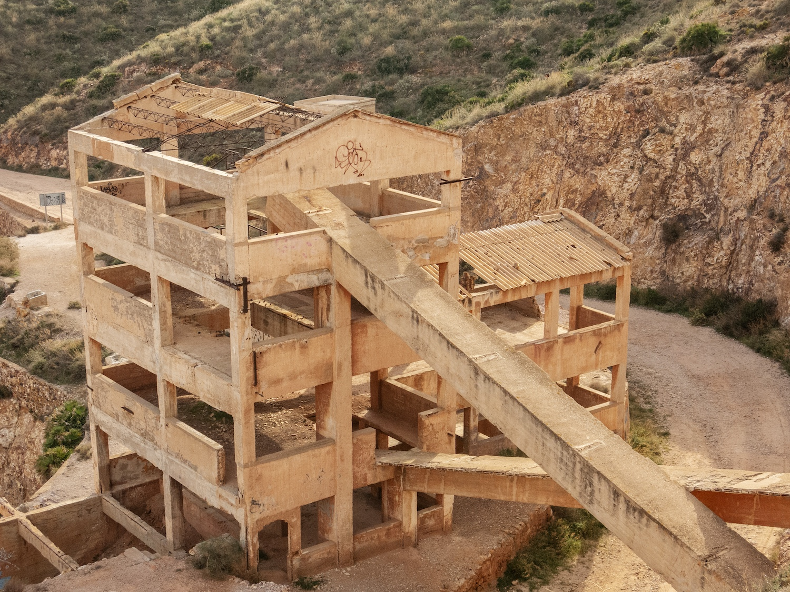
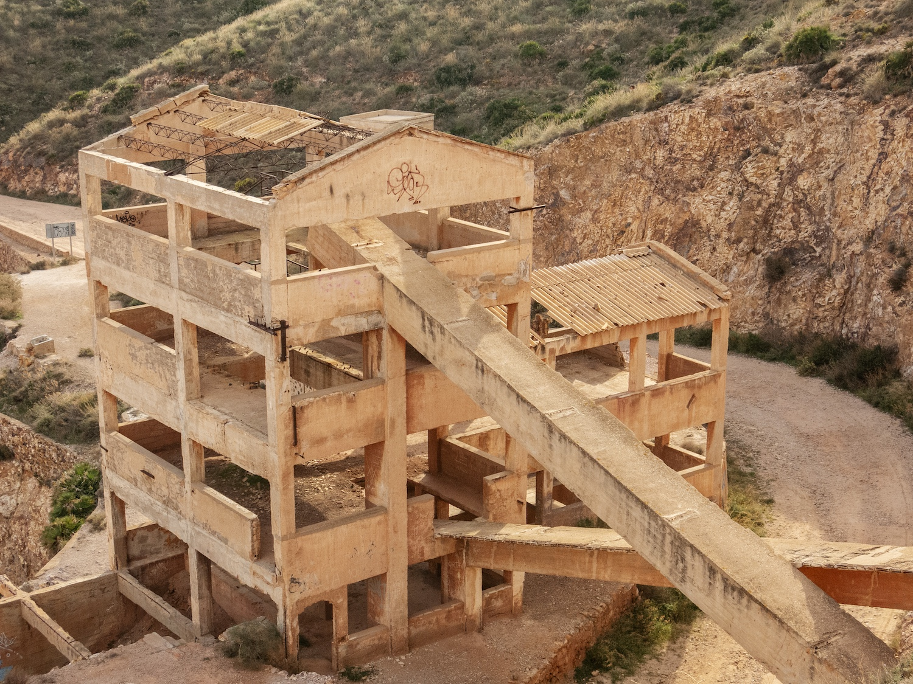
 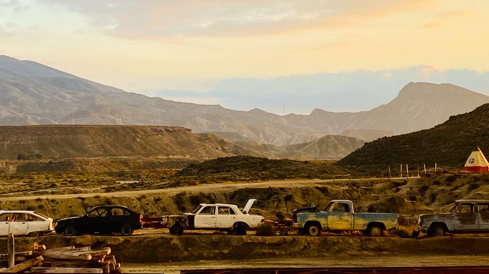
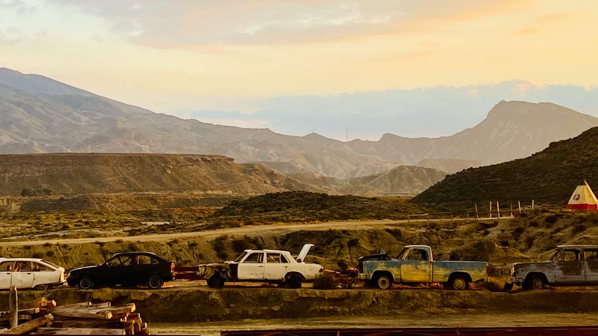